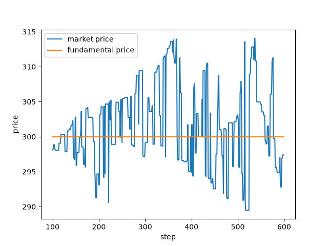

シミュレーションの実行¶
このチュートリアルでは、Pythonからシミュレーションを実行し、市場価格を出力して保存し、実行後にシミュレーターから結果を読み出して、それをプロットします。完全なスクリプトは tutorial_first_simulation.py です。プロットには matplotlib が必要ですが、これはPAMSと一緒にはインストールされません（pip install matplotlib）。
設定¶
シミュレーションは、市場、エージェント、セッションを定める設定によって記述されます。このチュートリアルでは、クイックスタート の 最小構成 をPythonのdictとして記述したものを使います：
CONFIG: Dict[str, Any] = {
"simulation": {
"markets": ["Market"],
"agents": ["FCNAgents"],
"sessions": [
{
"sessionName": "warmup",
"iterationSteps": 100,
"withOrderPlacement": True,
"withOrderExecution": False,
"withPrint": True,
},
{
"sessionName": "main",
"iterationSteps": 500,
"withOrderPlacement": True,
"withOrderExecution": True,
"withPrint": True,
},
],
},
"Market": {"class": "Market", "tickSize": 0.00001, "marketPrice": 300.0},
"FCNAgents": {
"class": "FCNAgent",
"numAgents": 100,
"markets": ["Market"],
"assetVolume": 50,
"cashAmount": 10000,
"fundamentalWeight": {"expon": [1.0]},
"chartWeight": {"expon": [0.0]},
"noiseWeight": {"expon": [1.0]},
"noiseScale": 0.001,
"timeWindowSize": [100, 200],
"orderMargin": [0.0, 0.1],
},
}
この設定は、1つの市場と100体の FCNAgent エージェントを作成します。warmup セッション（ステップ0から99）では板を埋めるだけで、main セッション（ステップ100から599）では注文の約定も行います。各キーの説明は JSON設定 にあります。
ランナーは、設定をdict、JSONファイルのパス、または開いたJSONファイルとして受け取ります。そのため、同じ設定を config.json として保存すれば、SequentialRunner(settings="config.json", ...) で実行できます。
実行¶
SequentialRunner は設定からシミュレーションを構築し、main() が呼ばれるとそれを実行します：
def print_prices(seed: int) -> None:
"""Run the simulation and print the market price at every step.
Args:
seed (int): seed of the random number generator.
"""
runner = SequentialRunner(
settings=CONFIG, prng=random.Random(seed), logger=MarketStepPrintLogger()
)
runner.main()
prngはシミュレーション全体の乱数生成器です。シミュレーターと、すべての市場、エージェント、セッション、イベントは、これから生成したシードで初期化された各自の乱数生成器を持つため、実行はシードによって完全に決まります：同じシードからは同じ価格が得られます。prngを指定しない場合、ランナーはrandom.Random()を使うため、実行のたびに結果が変わります。loggerはシミュレーションのログを受け取ります。MarketStepPrintLoggerは、各ステップの終わりに市場ごとに1行を出力します。ランナーが持てるロガーは1つまでです。
print_prices(seed=42) は次のように出力します：
0 0 0 Market 300.0 300.0
0 1 0 Market 300.0 300.0
0 2 0 Market 300.0 300.0
...
0 99 0 Market 300.0 300.0
1 100 0 Market 298.11165 300.0
1 101 0 Market 298.11165 300.0
1 102 0 Market 298.85386 300.0
...
1 599 0 Market 297.40149 300.0
# INITIALIZATION TIME 0.0029998
# EXECUTION TIME 0.0955184
各列は、セッションID（sessions におけるセッションの位置。warmup は 0）、ステップ、市場ID、市場名、市場価格、ファンダメンタル価格です。注文が約定しない間、市場価格は300のままで、ステップ100から動き始めます。市場に fundamentalVolatility がないため、ファンダメンタル価格は300のままです（市場 を参照）。main() が出力する最後の2行は、シミュレーションの構築と実行にかかった時間（秒）です。これらは実行ごとに変わります。
次の警告も表示されます：
UserWarning: order price does not accord to the tick size. price will be modified
これは正常です：FCNエージェントは tickSize の倍数でない価格を計算し、市場がそれを丸めます（買い注文は切り下げ、売り注文は切り上げ）。
価格の保存¶
価格を出力する代わりにPythonで使うには、MarketStepSaver を渡します：
def run_simulation(seed: int) -> Tuple[SequentialRunner, MarketStepSaver]:
"""Run the simulation and keep the prices of every step in memory.
Args:
seed (int): seed of the random number generator.
Returns:
Tuple[SequentialRunner, MarketStepSaver]: the runner after the run and the
saver holding the prices.
"""
saver = MarketStepSaver()
runner = SequentialRunner(settings=CONFIG, prng=random.Random(seed), logger=saver)
runner.main()
return runner, saver
実行後、saver.market_step_logs は、市場とステップごとに1つのdictを、ステップの順に並べたリストになります：
>>> saver.market_step_logs[100]
{'session_id': 1, 'market_time': 100, 'market_id': 0, 'market_name': 'Market', 'market_price': 298.11165, 'fundamental_price': 300.0}
すべての取引など、その他のデータを記録するには、独自のロガーを作成します（ロガーの作成 を参照）。
結果の読み出し¶
main() が戻った後も、runner.simulator はすべての市場、エージェント、セッションを保持しており、市場は価格と出来高の履歴を保持しています：
def summarize(runner: SequentialRunner) -> Dict[str, float]:
"""Read a few results of the main session from the simulator.
Args:
runner (SequentialRunner): the runner after ``main()`` has returned.
Returns:
Dict[str, float]: the last, lowest and highest market prices of the main
session, the number of shares traded in it, and the number of shares held by
all the agents at the end.
"""
market = runner.simulator.name2market["Market"]
main_session = runner.simulator.name2session["main"]
start = main_session.session_start_time
end = start + main_session.iteration_steps
prices = market.get_market_prices(times=range(start, end))
volumes = market.get_executed_volumes(times=range(start, end))
agents = runner.simulator.agents
return {
"last_price": prices[-1],
"min_price": min(prices),
"max_price": max(prices),
"total_volume": sum(volumes),
"total_shares": sum(
agent.get_asset_volume(market_id=market.market_id) for agent in agents
),
}
print(summarize(runner)) は次のように出力します：
{'last_price': 297.40149, 'min_price': 289.48107000000005, 'max_price': 314.08524, 'total_volume': 205, 'total_shares': 5000}
株式は持ち主を変えますが、その合計は変わりません：100体のエージェントは、それぞれ50株を持って開始しました。
シミュレーターは、名前またはIDでオブジェクトを検索できます：
name2market、name2agent、name2sessionはインスタンス名（"Market"、"FCNAgents-0"、"main"）で、id2marketとid2agentはIDで検索します。agents_group_name2agentは、グループ（"FCNAgents"）のエージェントを返します。markets、agents、sessionsは、それらすべてのリストです。
Market の履歴メソッドは、読み出すステップを times で受け取ります。times を指定しない場合は、市場の現在時刻までのすべてのステップを返します。この実行の後では、現在時刻は600（最後のステップの1つ後）です。そのため、上の例のように、各セッションの session_start_time と iteration_steps を使ってセッションを選択してください。主なメソッドは次のとおりです：
メソッド |
戻り値 |
|---|---|
|
市場価格とファンダメンタル価格。 |
|
各ステップの出来高と、価格×数量の合計。 |
|
各ステップにおける直近の約定価格と仲値。最初の約定の前や、板の片側が空のときは |
|
ステップ0から |
|
現在の板の最良価格（その側が空なら |
名前が s で終わるメソッドには、get_market_price(time) のような1ステップ用の形もあり、time のデフォルトは現在のステップです。現在より後のステップを求めると AssertionError: Cannot refer the future parameters が発生します。エージェントの保有資産は get_cash_amount() と get_asset_volume(market_id) で得られます。
プロット¶
保存した価格はmatplotlibでプロットできます：
def plot_prices(saver: MarketStepSaver, path: str) -> None:
"""Plot the market price and the fundamental price of the main session.
Args:
saver (MarketStepSaver): the saver used as the logger of the run.
path (str): path of the image file to write.
"""
logs: List[Dict[str, Any]] = [
log for log in saver.market_step_logs if log["session_id"] == 1
]
times = [log["market_time"] for log in logs]
fig, ax = plt.subplots()
ax.plot(times, [log["market_price"] for log in logs], label="market price")
ax.plot(
times, [log["fundamental_price"] for log in logs], label="fundamental price"
)
ax.set_xlabel("step")
ax.set_ylabel("price")
ax.legend()
fig.savefig(path)
plt.close(fig)
plot_prices(saver, path="prices.png") は main セッション（セッションID 1）を取り出し、次の画像を書き出します：

スクリプトの実行¶
完全なスクリプトを python tutorial_first_simulation.py で実行すると、シード42で以上のすべてを行い、prices.png をカレントディレクトリに書き出します。
次の エージェントの作成 では、このシミュレーションに独自の取引戦略を追加します。